Naše práce
Náš ročníkový projekt zkoumá dějiny Hranic na Moravě, od pravěku až po současnost. Prostudovali jsme
archivní dokumenty, navštívili místní památky a konzultovali s historiky, abychom vytvořili ucelený
přehled o vývoji města. Zaměřili jsme se na klíčové historické etapy, památky a zajímavosti, které
činí Hranice jedinečným místem. Naše práce zahrnuje také analýzu kulturního a průmyslového významu
města.
Náš projekt - Detail
Náš projekt zkoumá historii Hranic na Moravě od pravěku po současnost, včetně klíčových památek a
zajímavostí. Prostudovali jsme archivní dokumenty olomouckého biskupství, místní kroniky a
navštívili památky, jako je renesanční zámek nebo židovský hřbitov. Cílem bylo vytvořit přehledný a
poutavý obsah, který přiblíží historii města široké veřejnosti. Zvláštní pozornost jsme věnovali
obchodu na stezce do Slezska a průmyslovému rozvoji v 19. století.
Motivace
Motivací pro náš projekt byla touha představit bohatou historii Hranic na Moravě a zvýšit povědomí o
jejich kulturním dědictví. Hranice jsou městem s hlubokými historickými kořeny, které zahrnují
středověké obchodní cesty, renesanční zámek a židovskou komunitu. Chceme inspirovat návštěvníky, aby
objevili krásy města.
Kontakty
Kontaktujte nás na: SymionM@gymhranice.cz / KucminovaS@gymhranice.cz
🕰️ Pravěk v oblasti Hranic na Moravě
Hranice na Moravě se nacházejí v tzv. Moravské bráně – to je široké údolí mezi Jeseníky a Karpaty. Už
v pravěku to byla přirozená cesta, kudy lidé a později i karavany putovali ze severu na jih Evropy.
Právě díky této poloze bylo okolí Hranic osídleno velmi brzy.
🪓 Starší doba kamenná (paleolit)
Nejstarší osídlení v okolí Hranic pochází z období starší doby kamenné. V této době zde žili lovci a
sběrači, kteří se živili hlavně lovem velkých zvířat, jako byli mamuti, sobi nebo koně. Tito lidé si
vyráběli jednoduché kamenné nástroje, které sloužily k řezání masa, kůží nebo dřeva. V zimě se
ukrývali v jeskyních nebo si stavěli jednoduché přístřešky. Důležité nálezy z této doby se nacházejí
například v nedalekém Předmostí u Přerova.
🌾 Mladší doba kamenná (neolit)
V mladší době kamenné začali lidé měnit svůj způsob života. Už se nespoléhali jen na lov a sběr, ale
začali pěstovat obilí a chovat domácí zvířata. Usazovali se na jednom místě a zakládali první trvalé
osady. V této době se v okolí Hranic rozšířila kultura, kterou dnes označujeme jako kultura s
moravskou malovanou keramikou. Lidé této kultury vyráběli nádoby zdobené červenými, bílými nebo
černými vzory. Domy byly většinou z hlíny a dřeva, měly jednoduchou konstrukci, ale nabízely lepší
ochranu než dřívější obydlí.
🔥 Doba bronzová
V době bronzové se lidé naučili vyrábět předměty ze slitiny mědi a cínu – tedy z bronzu. Díky tomu
vznikly lepší nástroje, zbraně a ozdoby. V oblasti Hranic se objevují první větší osady.
Archeologové zde našli různé bronzové předměty, které lidé schovávali do země – buď jako poklad,
nebo jako dar bohům. Obchodní cesty vedoucí Moravskou bránou byly v této době velmi důležité,
protože spojovaly severní a jižní Evropu.
⚔️ Doba železná
Kolem roku 800 př. n. l. se začalo rozšiřovat používání železa. Z něj lidé vyráběli nejen nástroje,
ale i účinnější zbraně. V této době se v oblasti Moravy usadili Keltové. Byli to zruční řemeslníci a
obchodníci. Stavěli opevněná sídla zvaná oppida, i když přímo v Hranicích zatím žádné větší keltské
oppidum nalezeno nebylo. Po Keltech přišly germánské kmeny, například Markomani, kteří žili v
oblasti až do doby stěhování národů.
🏺 Archeologické nálezy
V samotných Hranicích i v jejich okolí se našly různé nálezy, které dokládají pravěké osídlení. Patří
sem například zbytky keramických nádob, pazourkové nástroje nebo doklady o zemědělství. Nejvíce
známých nálezů pochází z nedalekého Předmostí u Přerova, kde bylo objeveno i významné pohřebiště
lovců mamutů.
🏺 Starověk v okolí Hranic na Moravě
Ačkoliv samotné město Hranice vzniklo až ve středověku, oblast kolem něj byla osídlena už ve
starověku a dokonce i v pravěku. Nejstarší nálezy pocházejí z mladší doby kamenné 🪨, tedy z období
okolo 5000 let př. n. l.
V této době zde lidé vyráběli keramiku, nástroje a zakládali první osady. Později oblast obývali také
Keltové 🛡️, konkrétně kmen Bójů, kteří se usadili na území dnešní Moravy.
Z období římské říše 🏛️ (1.–4. století n. l.) byly v okolí Hranic nalezeny římské mince a předměty,
což dokazuje, že tudy vedly obchodní cesty spojující římské provincie se střední Evropou. I když zde
Římané přímo nežili, jejich vliv byl patrný.
🏰 Středověk v Hranicích na Moravě
První zmínka o Hranicích pochází z listiny z roku 1169, i když se jedná o pozdější opis (tzv.
falzum). Tehdy se město označovalo jako Alba Ecclesia (v latině "Bílý kostel") nebo také Mährisch
Weisskirchen (německy "Moravský Bílý kostel"). V tomto období byly Hranice majetkem olomouckého
biskupství, které mělo v oblasti silné postavení.
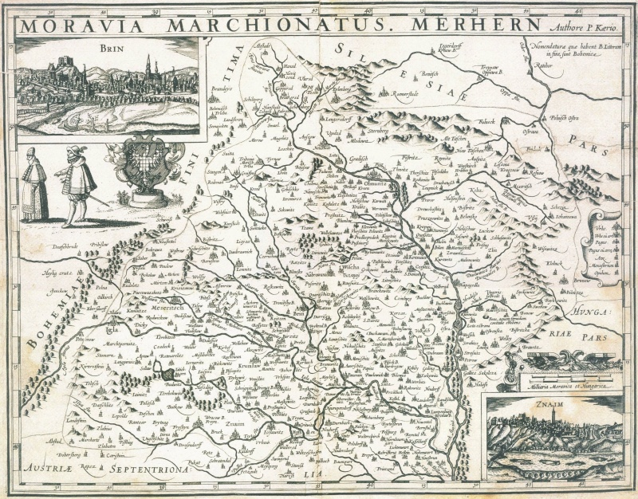
Ve 14. a 15. století město často měnilo majitele – bylo zastavováno různým šlechtickým rodům. Přesto
si Hranice udržely svůj význam a byly opevněny hradbami. Ve městě fungovaly cechy a postupně zde
vznikaly školy i církevní instituce. Středověká historie Hranic tak ukazuje, jak se z původní osady
stalo významné město na severní Moravě.
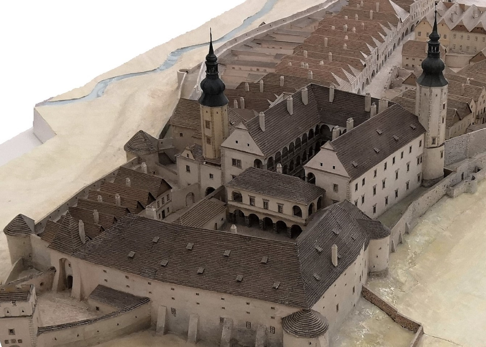
🏛️ Novověk v Hranicích na Moravě
🏰 16. století – Renesance a Žerotínové
Ve druhé polovině 16. století získal město významný moravský šlechtický rod Žerotínů. Ti nechali
přestavět původní gotický hrad na renesanční zámek 🏰, který se stal dominantou města. Zámek byl
později upraven v barokním stylu a dodnes slouží jako sídlo městského úřadu.
⚔️ 17. století – Třicetiletá válka a její dopady
V 17. století zasáhla Hranice třicetiletá válka. Město bylo několikrát poškozeno, včetně obléhání
švédskými vojsky. Přesto se Hranice dokázaly zotavit a pokračovaly v rozvoji.
🎖️ 18. století – Vznik vojenské kadetní školy
Roku 1766 byla v Hranicích založena vojenská kadetní škola, která přilákala nové obyvatele a zvýšila
prestiž města. Škola měla významný vliv na vzdělanost a vojenskou tradici města.
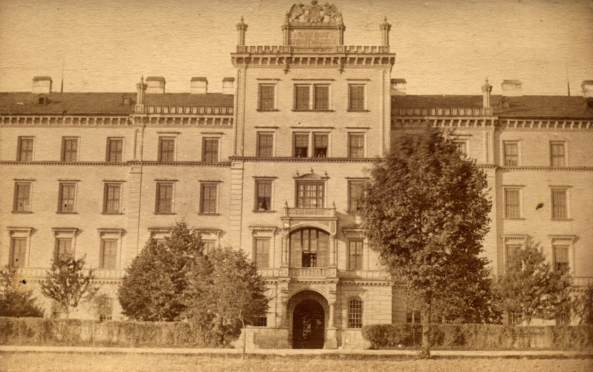
🚂 19. století – Průmyslová revoluce a železnice
Ve druhé polovině 19. století nastal v Hranicích rychlý rozvoj průmyslu ⚙️. Byla vybudována železnice
🚂, která propojila město s dalšími regiony. Začaly vznikat textilní i strojírenské podniky. Hranice
se staly významným železničním uzlem a moderním průmyslovým městem severní Moravy.
📜 20. století a současnost Hranic na Moravě
🇨🇿 Po vzniku Československa (1918–1938)
Po vzniku Československa v roce 1918 město dále rostlo. Budovaly se nové školy 🏫, nemocnice 🏥 a
rozvíjela se občanská infrastruktura. Hranice si upevnily své postavení jako regionální centrum.
⚠️ Druhá světová válka (1939–1945)
Za 2. světové války bylo město obsazeno nacisty. V Hranicích působila silná odbojová skupina, která
aktivně bojovala proti okupaci. Mnoho občanů zaplatilo za odpor životem, ale jejich hrdinství
zůstává v paměti města 🕊️.
🏗️ Období socialismu (1948–1989)
Po válce začal další rozvoj města. V 50. až 80. letech vznikala panelová sídliště 🏢, rozšiřovala se
dopravní infrastruktura a posiloval se průmysl. V 70. letech byla modernizována kasárna a rozšířena
vojenská přítomnost ve městě.
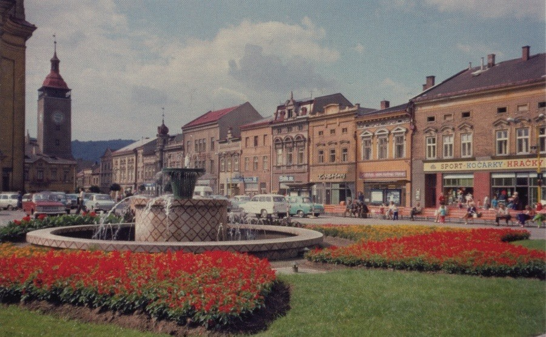
🌇 Současnost
Dnes jsou Hranice moderním městem s bohatou historií 📚, památkami 🏛️ a aktivním kulturním životem
🎭. Historické jádro města je vyhlášeno městskou památkovou zónou a láká návštěvníky svou
architekturou i historií. Hranice jsou také známé díky lázeňství v blízkých Teplicích nad Bečvou 💧
a výborné dopravní dostupnosti.
Zajímavosti
Hranice jsou známé díky Hranické propasti, nejhlubší zatopené propasti na světě, která se nachází v
blízkých lázních Teplice nad Bečvou. Město má bohatou židovskou historii, o čemž svědčí synagoga a
židovský hřbitov. Další zajímavostí je železniční uzel, který sehrál klíčovou roli v průmyslovém
rozvoji města.
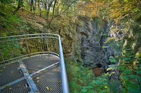
Okolí
Okolí Hranic nabízí přírodní krásy, jako jsou Hranická propast, Oderské vrchy a lázně Teplice nad
Bečvou, známé svými léčivými prameny. V blízkosti se nachází také přírodní rezervace a turistické
stezky, které lákají milovníky přírody a pěší turistiky.
Památky
Hranice na Moravě nabízejí řadu historických památek, které odrážejí bohatou historii města. Mezi
nejvýznamnější patří renesanční zámek, barokní kostel Stětí sv. Jana Křtitele, synagoga, židovský
hřbitov, městské opevnění a stará radnice.
Zámek Hranice
Renesanční zámek, původně gotický hrad, je dominantou města.
Kostel Stětí sv. Jana Křtitele
Barokní kostel z 18. století s bohatou výzdobou.
Synagoga
Orientální stavba z roku 1863, dnes kulturní památka.
Židovský hřbitov
Historický hřbitov z 17. století s hebrejskými náhrobky.
Městské opevnění
Dochované části hradeb z 15. století a měšťanské domy.
Stará radnice
Gotická budova přestavěná v 18. století, dnes muzeum.
Lázně Teplice nad Bečvou
Známe díky Hranické propasti a léčivým pramenům.
Galašův dům
Památný dům spojený s lékařem Josefem Gallašem.
Dům s renesančními sgrafity
Budova s výzdobou od Jana Červenky z roku 1583.
🏰 Zámek Hranice - Detail
Dominantou města je renesanční zámek, který vznikl přestavbou původního gotického hradu. V 16.
století ho nechal upravit rod Žerotínů ve stylu italské renesance. Má čtyři křídla, vnitřní arkádové
nádvoří a výraznou věž s hodinami 🕰️. Dnes slouží jako sídlo městského úřadu, informační centrum a
muzeum, kde si můžete prohlédnout expozice o historii města.
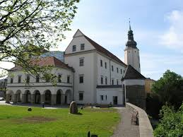
⛪ Kostel Stětí sv. Jana Křtitele - Detail
Barokní farní kostel byl postaven v letech 1754–1763. Stavbu vedl významný moravský architekt
František Antonín Grimm. Interiér zdobí bohatá barokní výzdoba a varhany z 18. století 🎼. Kostel se
nachází na Masarykově náměstí a je oblíbeným místem pro turisty i věřící.
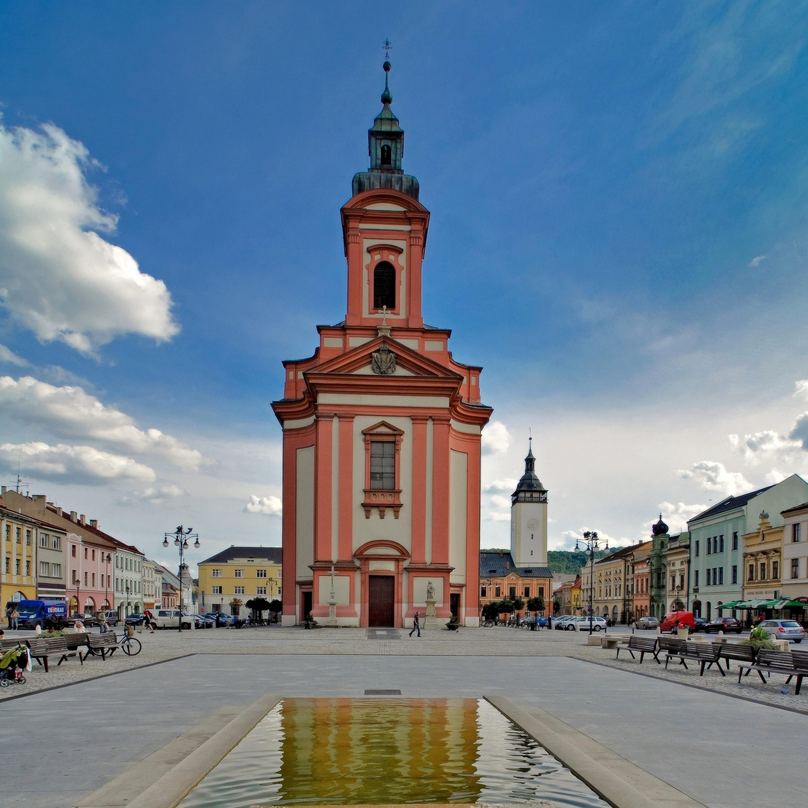
🕍 Synagoga - Detail
Synagoga byla postavena v roce 1863 v orientálním stylu. Sloužila místní židovské komunitě až do
druhé světové války. Dnes je kulturní památkou a využívá se ke kulturním akcím 🎭.
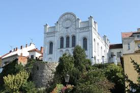
🪦 Židovský hřbitov - Detail
Nachází se na okraji města a patří k nejstarším na Moravě – založen byl již v 17. století. Dochovalo
se zde kolem 670 náhrobků s hebrejskými nápisy ✡️. Najdeme zde hroby příbuzných Sigmunda Freuda i
Franze Kafky. Po obnově v 90. letech je klíč k návštěvě dostupný v Turistickém informačním centru 🔑.
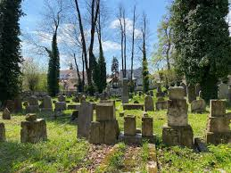
🧱 Městské opevnění a měšťanské domy - Detail
Části městského opevnění z 15. století jsou dosud patrné, včetně Hrubé brány. Na Masarykově náměstí
najdeme krásně dochované měšťanské domy s gotickými, renesančními, barokními i klasicistními
fasádami 🏘️.
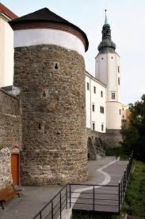
🏛️ Stará radnice - Detail
Původně gotická budova byla několikrát přestavěna, svou současnou podobu získala v 18. století. Dnes
zde sídlí městské muzeum s expozicemi o historii města a místních řemeslech 🔍.
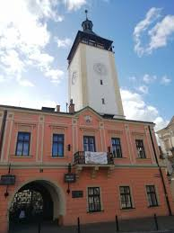
💧 Lázně Teplice nad Bečvou - Detail
I když neleží přímo v centru Hranic, spadají pod jejich správu. Jsou známé díky Hranické propasti –
nejhlubší propasti v Česku 🌊. Lázně byly založeny již v 16. století a navštěvovaly je významné
osobnosti.
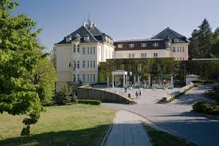
🏡 Galašův dům - Detail
Tato památka je spojená s osobností Josefa Hynka Aloise Gallaše, významného lékaře a spisovatele.
Nachází se u říčky Veličky a je cenným příkladem lidové architektury regionu 🏠.
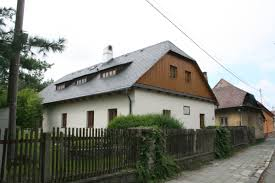
🎨 Dům s renesančními sgrafity - Detail
Stojí na rohu Hřbitovní a Komenského ulice. Je známý sgrafitovou výzdobou z roku 1583, jejímž autorem
byl malíř a alchymista Jan Červenka. Dochovaly se hlavně ornamentální prvky, a dům sloužil původně
jako hrobka, později byl přeměněn na obytný 🖌️.
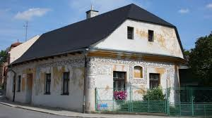
Další
Hranice nabízejí řadu dalších zajímavostí, jako jsou pravidelné kulturní akce, festivaly a místní
muzea. Mezi oblíbené akce patří Hranické kulturní léto, kde se konají koncerty, divadelní
představení a výstavy. Město také pořádá trhy a historické rekonstrukce, které přibližují život v
minulých staletích.